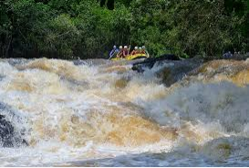
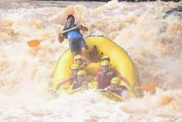
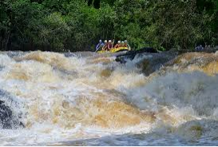
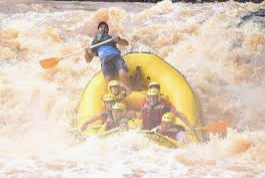
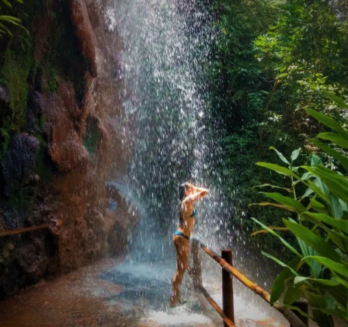
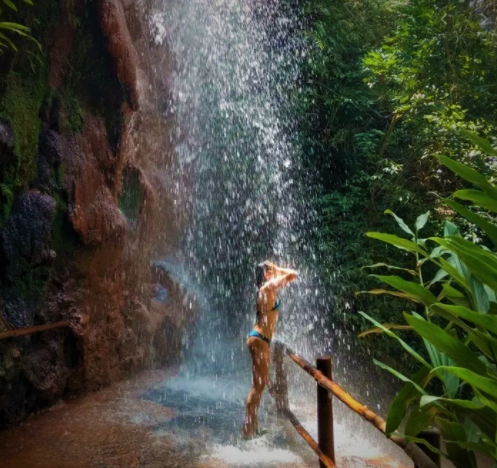
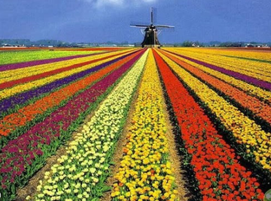
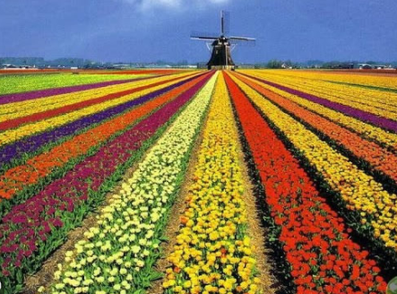

 



São Roque é conhecida como a Terra do Vinho pelas dezenas de vinícolas instaladas na região. Não à toa, um dos principais atrativos da cidade é a Rota do Vinho, localizada em meio à natureza e composta por três vias com mais de 30 estabelecimentos, entre restaurantes, lojas, fazendas, vinícolas, empórios e centros de entretenimento. Por ser muito próximo a São Paulo –a apenas 65 km–, é possível fazer um bate e volta e aproveitar muito a região em apenas um dia.
HOLAMBRA- SP (Um excelente lugar para curtir com a esposa, namorada e pais.).


 

Holambra é um município brasileiro do estado de São Paulo e microrregião de Campinas, fundada em 14 de julho de 1948. Seu nome, junção de Holanda, América e Brasil, se dá em virtude da colônia neerlandesa que se firmou na antiga fazenda Ribeirão.
Conhecida por ser a maior produtora de plantas ornamentais do Brasil e também sede da Expoflora (maior exposição de flores e plantas da América Latina que acontece entre os meses de agosto e setembro), a cidade oferece aos seus visitantes lindos jardins, praças super bem cuidadas para a diversão da criançada, a deliciosa culinária alemã e sobremesas típicas de tirar o fôlego! Não deixe de passar em uma das docerias para provar os quitutes locais! Suas ruas principais conservam a arquitetura das casinhas no estilo holandês, então aproveite a caminhada para, além de comprar souvenires de porcelana no centrinho comercial, garantir lindas fotos como recordação.
Conheça mais sobre este lindo lugar ( CLICK
AQUI )
Consulte o mapa ( CLICK AQUI )
SOCORRO - SP ( Localizado próximo a Campinas, este e um perfeito lugar para se curtir do relaxamneto até a aventura extrema ).


VISITAR A GRUTA DO ANJO Antiga mina de extração de quartzo desativada em 1995, a gruta sofreu infiltrações que criaram uma grande piscina natural que chega a ter 4 metros de profundidade em alguns trechos e agora é repleta de peixinhos. Não é possível mergulhar, mas os visitantes podem andar de pedalinho e admirar o visual encantador com a água translúcida que atravessa a formação rochosa. A gruta, inclusive, já serviu de locação para filmagens da novela Império, de 2014, da Rede Globo.
VER O PÔR DO SOL NO MIRANTE DA PEDRA DA BELA VISTA Ponto turístico mais alto da cidade, a Pedra da Bela Vista tem um visual maravilhoso durante o pôr do sol. O céu fica laranja enquanto músicos tocam ao vivo e o clima tranquilo impera. É possível relaxar beliscando petiscos no restaurante ao lado que oferece pizza na pedra, linguiças na chapa e o famoso pan de palo que você assa na hora. Para os mais aventureiros, o local também conta com o maior rapel da cidade, de 98 metros de altura. (R$ 20 para entrar). Dica: programe-se para estar a caminho pelo menos uma hora antes do pôr do sol para conseguir chegar a tempo, pois a estrada é de terra e bem esburacada.